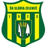

Posledný zápasU19 Starší dorast
Výsledok 3:1

ŠK Slávia ZelenečhostiaVýhrapolčas 2:0
Návrh webu · nie je to oficiálna stránka klubu
IV. liga U19 ZsFZ, 1. miesto z 11
Posledný zápasU19 Starší dorast
Výsledok 3:1

ŠK Slávia ZelenečhostiaVýhrapolčas 2:0
9–0–1výhry, remízy a prehry vo všetkých súťažiach, skóre 56:10
IV. liga U19 ZsFZ
| # | Tím | Z | V | R | P | Skóre | B |
|---|---|---|---|---|---|---|---|
| 1 | 10 | 9 | 0 | 1 | 56:10 | 27 | |
| 2 | 10 | 7 | 2 | 1 | 32:9 | 23 | |
| 3 | 10 | 7 | 1 | 2 | 27:17 | 22 | |
| 4 | 10 | 4 | 3 | 3 | 29:37 | 15 | |
| 5 | 10 | 5 | 0 | 5 | 36:30 | 15 | |
| 6 | 10 | 4 | 2 | 4 | 31:19 | 14 | |
| 7 | 10 | 4 | 1 | 5 | 25:21 | 13 | |
| 8 | 10 | 4 | 1 | 5 | 26:26 | 13 | |
| 9 | ŠK Slávia Zeleneč | 10 | 3 | 0 | 7 | 24:39 | 9 |
| 10 | 10 | 1 | 2 | 7 | 13:46 | 5 | |
| 11 | 10 | 1 | 0 | 9 | 19:64 | 3 |
Hráči, ktorí v kalendárnom roku 2026 nastúpili alebo boli v nominácii na zápas (podľa Sportnetu). Pri mládeži uvádzame len mená.